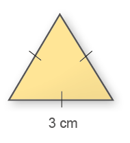
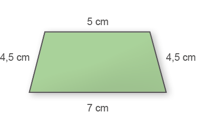
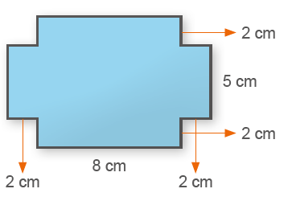
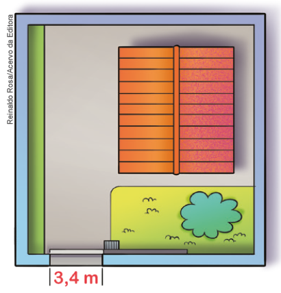

UNIDADE 7 - Grandezas e medidas

Reinaldo Rosa/Acervo da Editora
248
Vende-se apartamento
71 m² de área privativa
Este apartamento apresenta: 3 dormitórios, sendo 1 suíte, uma sala com dois ambientes, cozinha, lavanderia e 1 banheiro. No edifício há área para o lazer, para a prática esportiva, entretenimento e contemplação. O espaço contemplação é um verdadeiro tributo à natureza sendo 10 000 m² de bosques. Cada apartamento tem direito a uma vaga de garagem.
![Ilustração de uma planta baixa de um apartamento. Ela é a representação desse espaço em projeção horizontal, como se você visse de cima os cômodos do imóvel. A planta do apartamento da esquerda para a direita tem um banheiro, que ocupa quase a totalidade da lateral esquerda da planta. Um pouco maior que o banheiro, uma sala de Tv e de jantar com um sofá para três pessoas e mais outro sofá para uma pessoa. À frente dos sofás, uma televisão de plasma. À direita da TV, a mesa de jantar com seis cadeiras. No centro, quarto com cama de solteiro e um banheiro. Mais à direita, um quarto com cama de casal com banheiro, metade do tamanho do quarto central. No canto direito, um outro quarto de solteiro.](../../resources/images/planta.png)
CONVERSE
1. Como vimos no texto, a superfície do apartamento possui uma medida. Como chamamos a medida de uma superfície?
2. O que os valores 71 m² e 10 000 m² indicam?
3. Como poderíamos saber o comprimento total do contorno do apartamento? Como chamamos essa medida?
249
CAPÍTULO 1 - Perímetro
Conceito de perímetro
Juliana adora costurar e está fazendo uma colcha de patchwork. Para fazer o acabamento da colcha, ela deverá costurar uma fita de cetim em toda a sua volta.

Reinaldo Rosa/Acervo da Editora

1. Quantos metros de fita lilás Juliana precisará para fazer o acabamento da colcha? Troque ideias com seu colega e expliquem como é possível fazer esse cálculo.
a) Sabendo que a colcha sem o acabamento tem 180 cm por 230 cm, quantos metros de fita serão necessários para fazer o acabamento?
250
UNIDADE 7 - CAPÍTULO 1
Sabendo que a colcha tem 180 cm por 230 cm, quantos metros de fita serão necessários para fazer o acabamento da colcha? Para responder a essa questão, é necessário calcular o perímetro.
Portanto: 180 + 180 + 230 + 230 = 820 cm. Transformando esse valor em metros, temos 8,2 m.
Agora, observe como podemos calcular o perímetro (P) de alguns polígonos.
a)

P = 6 + 10 + 8 = 24 cm
b)

P = 5 ∙ 3 = 15 cm
ENCONTRE SOLUÇÕES
1. Em seu caderno, determine o perímetro dos polígonos a seguir.
a)

b)
c)
d)
2. O perímetro de um quadrado é igual a 30 cm. Qual é a medida do lado desse quadrado?
3. A medida do lado de um hexágono regular é igual a 6 cm. Qual é o perímetro desse hexágono, sabendo que ele apresenta todos os lados com a mesma medida?
4. O perímetro de um retângulo é igual a 54 cm. Sabendo-se que um dos lados mede 12 cm, determine a medida do outro lado.
UNIDADE 7 - CAPÍTULO 1
251
5. Na malha quadriculada a seguir, temos alguns polígonos representados. Em seu caderno, determine o perímetro de cada um deles, sabendo que a medida do lado de cada quadradinho da malha é igual a 0,5 cm.
![Na malha quadriculada, cinco polígonos representados pelas cores A, B, C, D, E. A letra A é um retângulo azul. Ele ocupa quatro quadrados em cima e mais quatro embaixo. A letra B é um quadrado. Ele ocupa dois quadrados em cima e mais dois embaixo. A letra C é laranja, ela ocupa na malha quadrada o espaço de três linhas e quatro colunas. Na linha 1, em laranja os dois quadrados centrais. Na linha 2, em laranja todos os quadrados. Na linha 3, os dois quadrados centrais. A letra D, na cor verde, ocupa uma malha quadrada de 3 linhas e cinco colunas. Na linha 1, em verde a segunda e a quarta coluna. Na linha 2, em verde a linha inteira. Na linha 3, a segunda e a quarta coluna. Na letra D, em marrom, quatro quadrados em cima e dois centrais embaixo.](../../resources/images/254.PNG)
a) Qual dos polígonos apresenta o maior perímetro?
b) Quais são os polígonos que apresentam o mesmo perímetro?
6. A seguir, temos um triângulo equilátero cujo perímetro é igual a 12 cm. Determine o perímetro do octógono regular.

7. Determine o perímetro do polígono abaixo.

8. Leia o texto a seguir.
Começa nesta terça-feira costura dos rolos de grama sintética no Maracanã
[…]
O gramado híbrido entre grama natural e sintética é um modelo que vem sendo muito bem visto no futebol. O maior exemplo disso é Itaquera. A Arena do Corinthians usa este formato e é sempre elogiada pela ótima qualidade do campo, considerado pelos jogadores e treinadores como o melhor do Brasil.
[…]
► Sabendo-se que o campo é retangular e suas dimensões são 105 m por 68 m, determine o seu perímetro.
9. Um terreno quadrado tem um muro medindo 116,6 m de comprimento e um portão eletrônico medindo 3,4 metros.
a) Qual é o perímetro desse terreno?
b) Quanto mede o lado desse terreno?
10. Um retângulo e um quadrado têm perímetros iguais. Sabendo que os lados do retângulo medem 7 cm e 4 cm, determine a medida do lado do quadrado.
252
UNIDADE 7 - CAPÍTULO 1
11. Márcio adora praticar esportes. Ele corre dois dias por semana em uma praça perto de sua casa. Ele sempre dá 4 voltas completas na pista de corrida. Quantos quilômetros, aproximadamente, ele costuma correr em um dia?

Reinaldo Rosa/Acervo da Editora

12. (OBMEP) Daniela quer cercar o terreno representado pela figura. Nessa figura, dois lados consecutivos são sempre perpendiculares e as medidas de alguns lados estão indicadas em metros. Quantos metros de cerca Daniela terá que comprar?

a) 180 cm
d) 280 cm
b) 200 cm
e) 300 cm
c) 220 cm
13. (OBMEP) Juntando, sem sobreposição, quatro ladrilhos retangulares de 10 cm por 45 cm e um ladrilho quadrado de lado 20 cm, Rodrigo montou a figura ao lado. Com uma caneta vermelha ele traçou o contorno da figura. Qual é o comprimento desse contorno?
a) 180 cm
b) 200 cm
c) 220 cm
d) 280 cm
e) 300 cm

UNIDADE 7 - CAPÍTULO 1
253